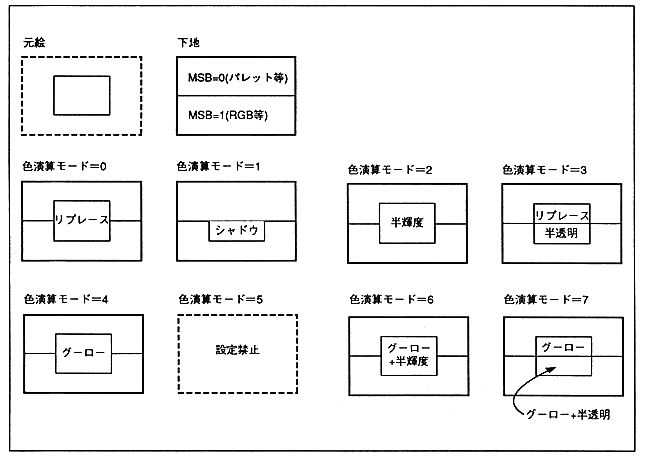

For parts (sprites) with original pictures, color operations other than shadows are valid only in RGB mode (color mode 1 with lookup table RGB code and color mode 5). When not in RGB mode (color bank mode characters), results are not guaranteed.
In the color calculation of the part with the original picture, the transparent code is valid when SPD = 0 and the end code is valid when ECD = 0, so no color calculation is performed for that pixel.
When performing color calculation other than shadow in RGB mode (color mode 5) and SPD = 1, the result of pixels with transparent color code (0000H) in the original picture is not guaranteed. Color calculation is performed assuming black.
* If color calculation other than shadow is performed in RGB mode (color mode 5) and ECD = 1, the pixel result of the original picture end code (7FFFH) is not guaranteed. Color calculation is performed assuming that it is white.
∙ Color operations other than shadows for polygons, polylines, and lines are valid only when the non-texture color is RGB code.
Figure 6.15 Color calculation example
